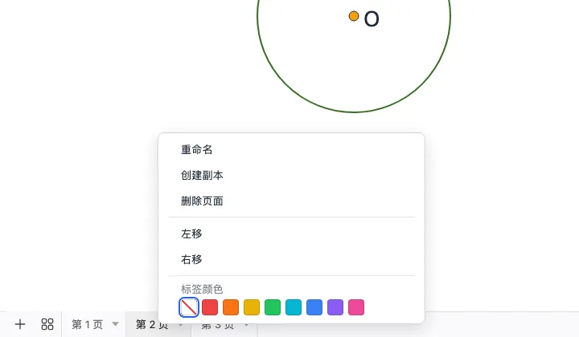

打开与保存
打开
打开 载入一个文件：
| 扩展名 | 来源 |
|---|---|
.dgo |
DocGeo，原生格式 |
.dgp |
DGPad，导入 |
.ggb |
GeoGebra，导入 |
也可以把文件图标拖到页面上，编辑器和阅读器中均可。
打开的图形会替换当前图形，并清空撤销历史。
在线图形也可以通过链接打开（见通过链接分享图形）。
文件菜单还提供打开…（Ctrl O）和新建图形，后者从空白图形开始。
导入不完整
不支持的 DGPad 或 GeoGebra 元素会连同其依赖对象一起被忽略；提示中会列出它们（“未导入：…”）。详见导入 DGPad 和 GeoGebra 图形。
保存
、文件 › 保存 或
Ctrl
S 将图形保存为.dgo。视图（缩放、3D
方向、坐标系）也会保存。
在 Chrome 和 Edge 中，DocGeo
像应用程序一样保存：第一次保存时询问文件存放位置，之后直接替换该文件，不再询问。用打开或拖放到页面上的.dgo图形会保存回原文件；浏览器会请求一次修改权限。DGPad
或 GeoGebra
图形从不会被覆盖：第一次保存会新建一个.dgo文件。另存为…（Ctrl
Shift S）可选择另一个文件。
文件名显示在菜单栏末端；红点表示有未保存的更改。保存后，或撤销到已保存的状态时，红点消失。移动或缩放视图不算更改。
在其他浏览器（Firefox、Safari）中，或 DocGeo
嵌入其他页面时，保存会下载图形，文件名与打开的图形相同（新图形为figure.dgo）。
.dgo 是唯一的保存格式：打开 DGPad 或 GeoGebra
图形后保存，即完成转换。
工作簿：多个页面
工作簿把多个图形（即它的页面）放在同一个
.dgo 文件中。图形下方的标签一次显示一个页面。

- 文件 › 新建页面在其他页面之后添加一个空白页面：当前图形成为第 1 页。之后，标签开头的 + 按钮作用相同，旁边的按钮列出所有页面。
- 右键单击标签或其 ▾ 箭头，打开页面菜单：重命名、创建副本、删除页面、左移或右移，以及标签颜色。
- 双击标签可重命名其页面（Enter 确认，Esc 取消）；两个页面不能同名。拖动标签可改变其位置。
- 各页面相互独立：每个页面有自己的对象、坐标系、宏和撤销历史，回到该页面时仍然保留。不过，公式可以读取另一个页面的值（读取另一个页面）。
- 保存时写入整个工作簿，每个页面保持离开时的状态；显示的页面就是下次打开的页面。只剩一个页面的工作簿重新成为普通图形。
阅读器也显示标签。嵌入网页中的图形只显示保存时显示的那个页面。
通过链接分享图形
放在网上的图形可以通过链接打开：编辑器的网址，后接
?url= 和文件的链接，原样粘贴。
https://doctools.org/apps/docgeo/editor.html?url=https://www.dropbox.com/scl/fi/…/thales.dgo?rlkey=…&dl=0文件的链接可以来自：
| 服务 | 要复制的链接 |
|---|---|
| Google Drive | 共享链接，访问权限为“知道链接的任何人” |
| Dropbox | 共享链接 |
| OneDrive |
个人账户的共享链接（https://1drv.ms/u/c/…）
|
| Nextcloud | 公开共享链接，不设密码 |
| 网站 |
文件的网址（.dgo、.dgp
或 .ggb）
|
格式根据文件内容识别，文件名显示在菜单栏末端。在线文件不会被修改：保存时会在电脑上创建一个
.dgo 文件。
?url=
放在网址的最后：其后的所有内容都属于链接（editor.html?lang=en&url=…）。
将图形嵌入网页
已在网上发布的图形也可以显示在网页中，并且可以操作：参见嵌入网页。
语言
DocGeo
使用浏览器的语言；?lang=可指定语言（ar、de、el、en、es、fr、hi、it、nl、pt、zh、zh-TW）。语言也决定命令的名称（中点、Milieu…）；英文名称在所有语言中都能识别。